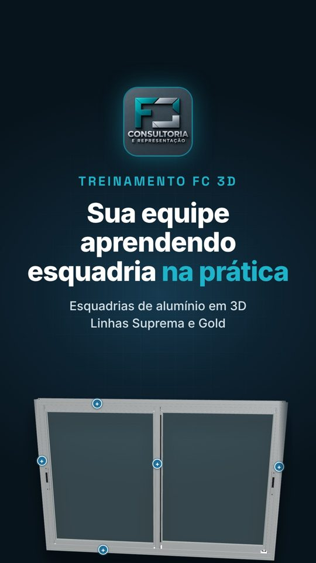
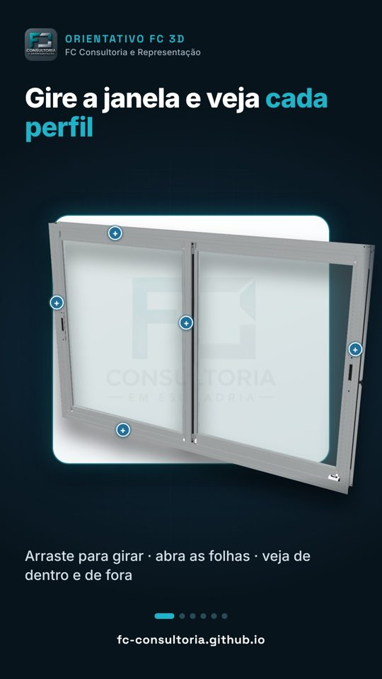
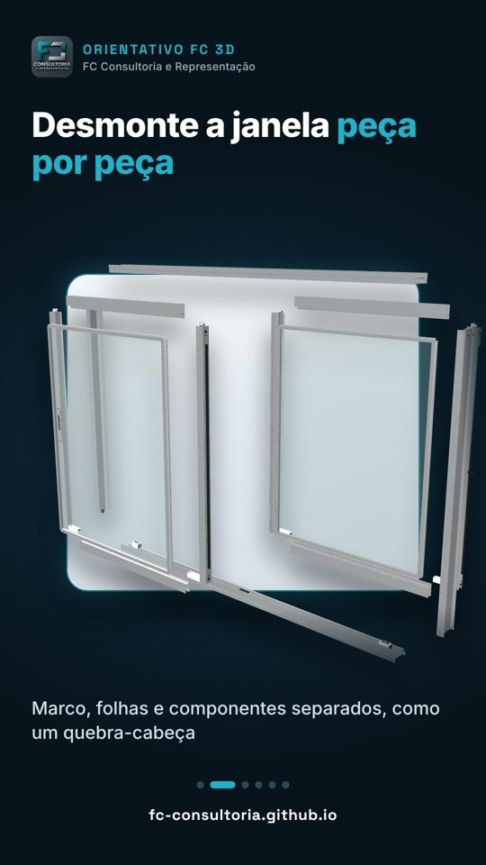
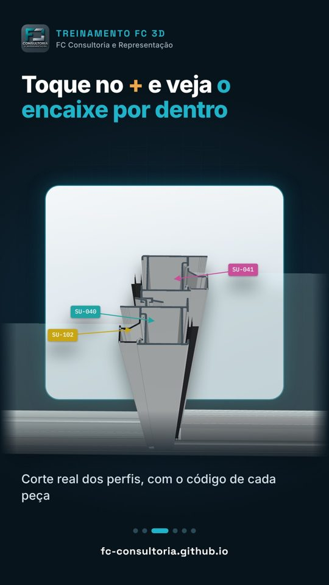
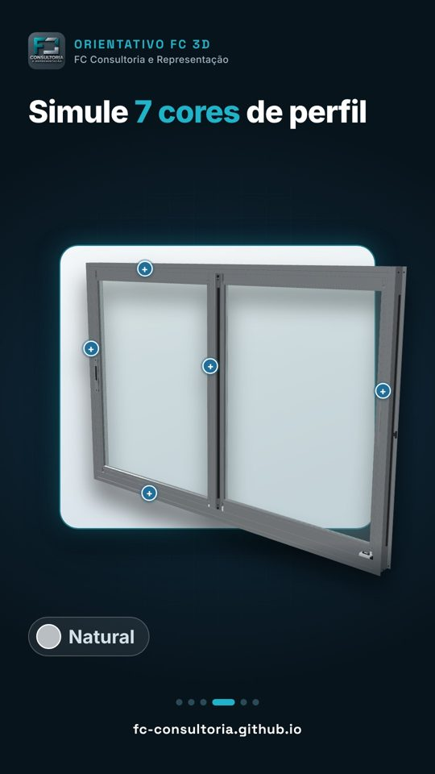
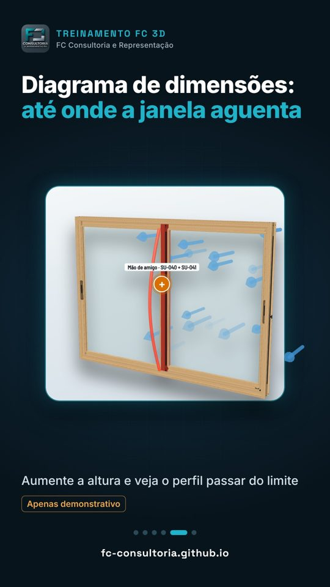
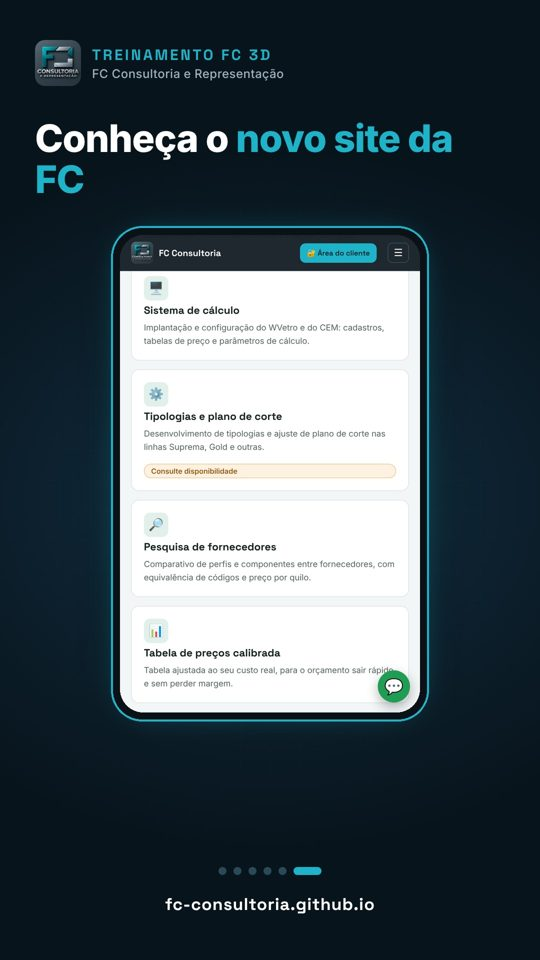
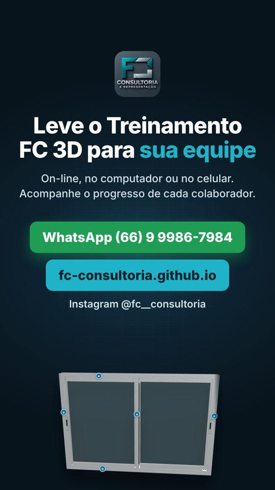

FC Consultoria e Representação · Sinop-MT · vídeo vertical 1080×1920 · 48 segundos · sem música (a música é escolhida na hora de postar)
Divulgar no Status do WhatsApp e no Instagram (Reels/Stories) a consultoria da FC em sistema (WVetro e CEM) e distribuição, mostrando o Orientativo FC 3D: uma plataforma on-line onde a equipe de vidraçarias, serralherias e fábricas de esquadrias aprende as linhas de alumínio Suprema e Gold em 3D, e o novo site da FC (fc-consultoria.github.io), que tem uma demonstração grátis da janela 3D.
Público: donos e gestores de vidraçarias, serralherias e fábricas de esquadrias de alumínio.
Ação desejada: chamar no WhatsApp (66) 9 9986-7984 ou visitar o site.
Estilo: fundo azul-escuro da marca, destaque ciano (#1fb3c9), a janela 3D "saindo da tela" por cima do quadro claro.
| Tempo | Cena | Texto na tela |
|---|---|---|
| 0–3 s | Abertura: logo da FC, janela 3D subindo | ORIENTATIVO FC 3D · "Sua equipe entendendo a esquadria na prática" · Esquadrias de alumínio em 3D · Linhas Suprema e Gold |
| 3–9 s | Janela de correr 2 folhas girando | "Gire a janela e veja cada perfil" · Arraste para girar · abra as folhas · veja de dentro e de fora |
| 9–15 s | A janela se desmonta em peças | "Desmonte a janela peça por peça" · Marco, folhas e componentes separados, como um quebra-cabeça |
| 15–21 s | Zoom no corte do encontro das folhas com o código de cada perfil | "Toque no + e veja o encaixe por dentro" · Corte real dos perfis, com o código de cada peça |
| 21–27 s | A janela troca de cor: Branco, Preto fosco, Bronze, Natural, Cerejeira Real, Aço Corten, Linheiro Real | "Simule 7 cores de perfil" + nome da cor |
| 27–34 s | Diagrama de dimensões: a altura aumenta, o vento empurra e o perfil fica vermelho | "Diagrama de dimensões: até onde a janela aguenta" · Apenas demonstrativo |
| 34–44 s | Celular rolando o novo site da FC até a demonstração grátis | "Conheça o novo site da FC" |
| 44–48 s | Fechamento com chamada | "Consultoria FC com Orientativo 3D para sua equipe" · Precificação, WVetro e CEM configurados e equipe orientada em 3D · WhatsApp (66) 9 9986-7984 · fc-consultoria.github.io · Instagram @fc__consultoria |








Pedido para quem for sugerir melhorias: avalie o ritmo (48 s), a ordem das cenas, os textos, a chamada final e sugira legenda/hashtags para Instagram e Status do WhatsApp.